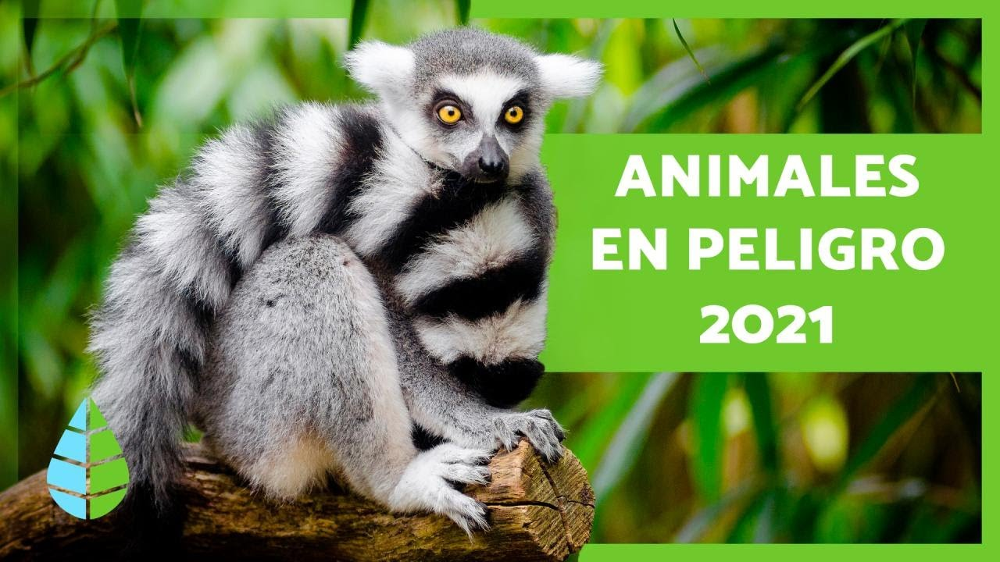

Animales En Peligro De Extinción |
Lista |
Causas |
Como Prevenirlo |
Contacto |
|  |
Desde que la vida surgió en la Tierra, su fauna se ha transformado en muchas ocasiones. Durante miles de años y por diversas razones, se han producido cinco grandes extinciones de las especies que han poblado la Tierra: son las conocidas como las cinco extinciones masivas. En la actualidad, y debido a la acción de los seres humanos, el planeta está al borde de los que los científicos denominan la Sexta Gran Extinción. (Lista de especies afectadas en España, Mexico, Perú y el mundo). Pero, ¿es realmente un problema tan grave? Para conocer a fondo el problema de la pérdida de biodiversidad se deben conocer distintos aspectos y conceptos clave para entender mejor a nivel biológico la cuestión:
Se considera que una especie está en peligro de extinción cuando todos los representantes de la misma corren el riesgo de desaparecer de la faz de la Tierra.
Según datos de la Unión Internacional para la Conservación de la Naturaleza, el organismo internacional con mayor potestad sobre el problema, aproximadamente 5.200 especies de animales se encuentran en peligro de extinción en la actualidad. Además, en un desglose por clase, se encuentran en peligro de extinción el 11% de las aves, el 20% de los reptiles, el 34% de los peces y 25% de los anfibios y mamíferos.
Existen múltiples causas por las que una especie puede llegar a encontrarse al borde de la extinción. Las razones pueden resultar tremendamente particulares para cada especie, pero en líneas generales, entre las mayores amenazas se encuentra la destrucción y fragmentanción de sus hábitats; el cambio climático; la caza y tráfico ilegal; y la introducción de especies exóticas.
No es una tarea fácil. Evitar que una especie desaparezca implica la puesta en marcha de una gran cantidad de recursos y acciones concretas. Algunas de ellas serían evitar la fragmentación de sus habitats, por ejemplo la deforestación; perseguir y castigar con dureza la caza ilegal y el tráfico de especies; la creación de reservas naturales; o el fomento de programas de reproducción, reintroducción y de mejora genética. La lucha contra la contaminación y el cambio climático también es la lucha por la conservación de muchos animales. Cada decisión personal tiene una consecuencia a nivel global en múltiples aspectos, de ahí la importancia de la concienciación social de la población.